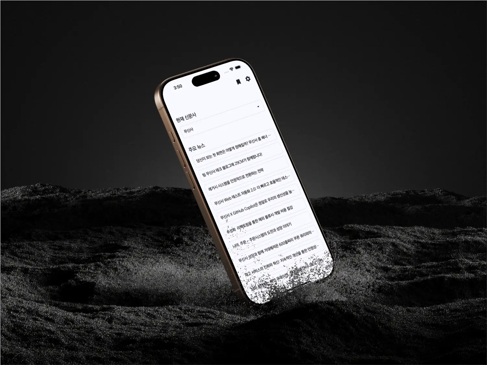
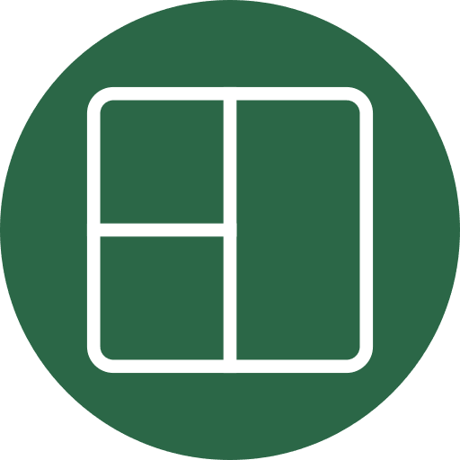

기술 블로그를 매일 챙겨보기엔 시간도 부족하고 귀찮을 때가 많습니다. 그래서 필요한 글만 쏙 뽑아 한눈에 정리해 드립니다. 이제 탭 여러 개 열지 말고, 개발자 신문에서 끝내세요.
매일 쏟아지는 기술 뉴스 속에서, 진짜 개발자에게 필요한 정보만 쏙쏙 골라드립니다. 읽을 거리는 많지만, 읽을 가치는 우리가 대신 골라드릴게요.
바쁘다 보면 좋은 글도 잊기 쉽죠. 읽지 않은 글이 쌓이지 않도록, 리마인드 알림으로 챙겨드릴게요.
"이건 나중에 꼭 읽어야지" 싶은 글은 북마크! 언제든 다시 찾아볼 수 있도록 깔끔하게 정리해드립니다.
늦은 밤, 눈이 피로하지 않도록. 개발자 신문은 다크모드를 완벽하게 지원합니다.
